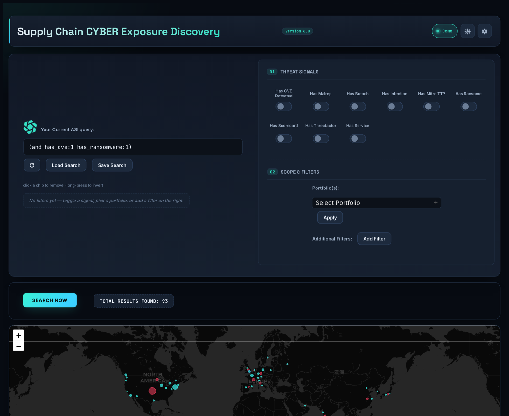
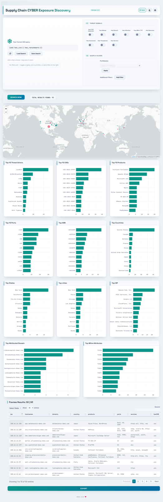

A zero-install security console that turns attack-surface queries into live tables, ranked charts, and a geographic threat map — all from a single HTML file, with a fully offline demo mode.

Compose queries, drill into charts, map exposure geographically, and export — without leaving the page or standing up a backend.
Boolean logic (and / or / not), ranges, and negation — plus nine one-click threat-signal toggles for CVE, ransomware, breach, infection, MITRE TTP and more.
Top threat actors, CVEs, products, ports, ASN, ISP, countries, states, cities, attributed domains, and MITRE techniques. Click any bar to drill straight into the query.
Interactive Leaflet map with zoom-scaled, severity-colored device markers and theme-matched basemaps.
Search across vendor portfolios, then expand into third-party (AVD) vendor discovery in one click.
CSV (preview or all findings), JSON, and re-indexed exports by domain, CVE, product, service, port, CPE, library, or org.
Every applied filter becomes a removable chip — click to remove, long-press to invert — so the query never becomes an opaque wall of text.
A dark security-ops console and a light analyst report — both designed on purpose, toggled and remembered across sessions.
The dashboard ships with a self-contained demo engine so every screen, chart, filter, and export works before you ever add a key.
All data is fictional: -demo.com domains and reserved IP ranges. Nothing references a real host.

Field matches, boolean groups, ranges, and negation — build them by hand or with the toggles and dropdowns.
Vanilla JavaScript orchestrating a small set of battle-tested libraries, all via CDN. Open it from file:// and it runs.